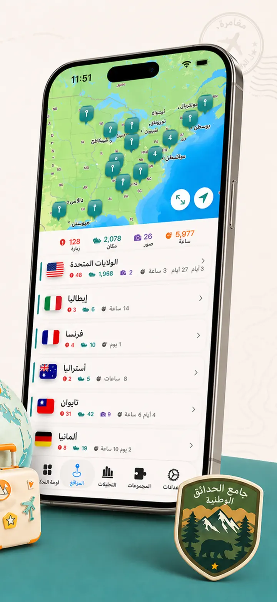
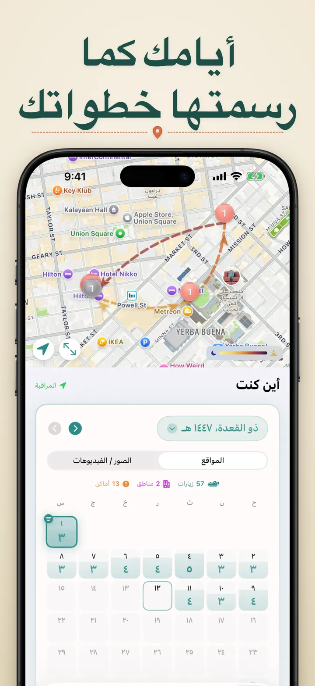
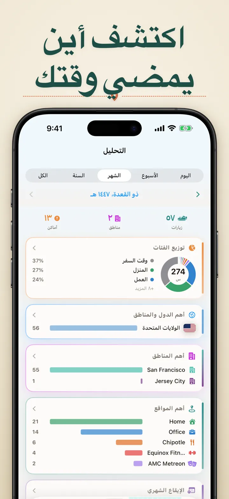
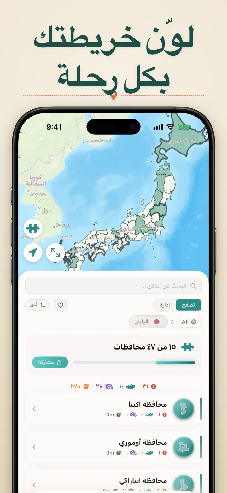
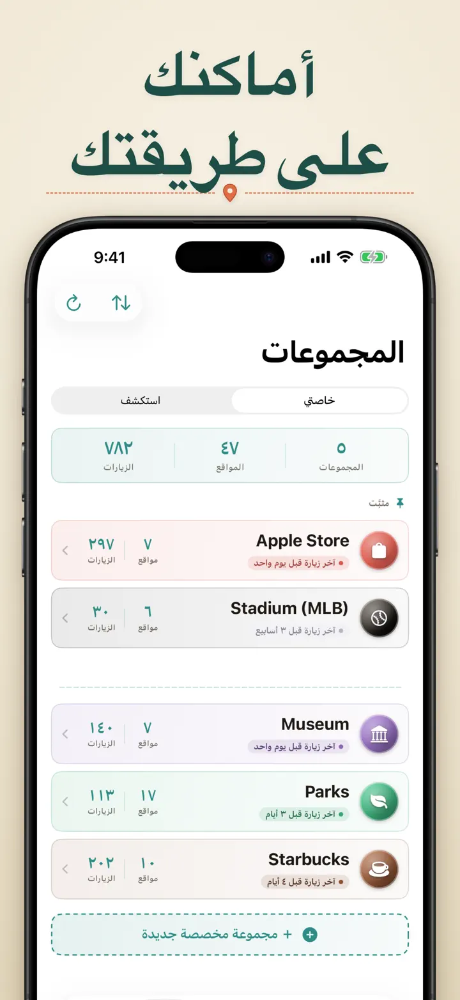
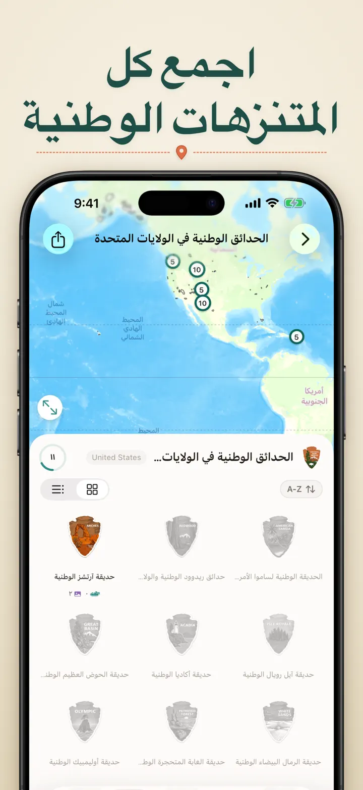
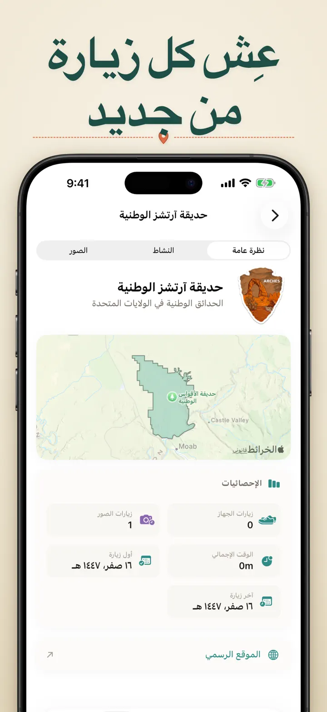

أين كنت
تتبّع تلقائي للأماكن والرحلات
جديد: 103 معابد إيتشينومييا في اليابان، لكل منها شارته المنحوتة. تتبّع تلقائي للزيارات وجدول زمني خاص، كل ذلك على جهازك.
تنزيل من App Storeحول التطبيق
أين كنت؟ — ذاكرتك الشخصية للأماكن
هل حاولت يوماً تذكّر اسم ذلك المطعم الرائع الذي زرته الشهر الماضي؟ أو تساءلت كم من الوقت تقضيه في العمل مقارنةً بالمنزل؟ تطبيق "أين كنت؟" يسجّل زياراتك تلقائياً ويبني جدولاً زمنياً جميلاً لرحلة حياتك.
التتبّع التلقائي
لا حاجة للتسجيل اليدوي. يسجّل التطبيق بهدوء أوقات وصولك ومغادرتك للأماكن، فيُنشئ سجل زيارات مفصّل دون أي جهد منك.
عرض التقويم الذكي
شاهد زياراتك مرتّبة حسب اليوم أو الأسبوع أو الشهر. يعرض التقويم البديهي عدد الزيارات والأماكن الفريدة بنظرة واحدة. اضغط على أي يوم لترى أين كنت بالضبط.
ودجت الشاشة الرئيسية وشاشة القفل
شاهد أحدث زياراتك بنظرة واحدة عبر ودجت الشاشة الرئيسية المتوسط. تعرض ودجت شاشة القفل موقعك الحالي، أو مؤقّت الإقامة المباشر، أو عدد زيارات اليوم — وكلها قابلة للنقر للانتقال إلى التطبيق.
أماكن منظّمة
تُجمّع الأماكن تلقائياً حسب المنطقة والمدينة. أسنِد فئات مخصّصة مثل "المنزل" أو "العمل" أو "النادي" أو "المقهى". أنشئ فئاتك الخاصة بأيقونات وألوان تناسب أسلوب حياتك.
تحليلات قوية
اكتشف الأنماط في حياتك:
- توزيع الوقت حسب الفئات
- أكثر الأماكن زيارةً
- تحليل إيقاع الأسبوع
- اتجاهات تكرار الزيارات
- مخطط مدة الإقامة لكل مكان — اعرف كم تبقى عادةً، حسب اليوم أو الأسبوع أو الشهر أو السنة
مجموعة الدول والمناطق
حوّل أسفارك إلى لعبة شيّقة! شاهد كم ولاية أو منطقة زرتها داخل كل دولة. شارك تقدّمك على شكل صورة لغز جميلة لإلهام الأصدقاء والعائلة.
تقدّم الحدائق الوطنية
استكشف الطبيعة! يسجّل التطبيق زياراتك للحدائق الوطنية تلقائياً ويتتبّع تقدّمك إلى جانب أماكنك اليومية.
القلاع الـ100 الشهيرة في اليابان
هل تجوب اليابان؟ مجموعة مدمجة جديدة تتتبّع زياراتك للقلاع الـ100 الشهيرة في البلاد. تجدها في تبويب "المجموعات" → استكشف → اليابان.
المجموعات المخصّصة
تتبّع أي شيء تريده — متاجر Apple، المتاحف، المقاهي، المكتبات. أنشئ مجموعة، حدّد الكلمات المفتاحية، وستمتلئ تلقائياً. أضف أو أزل الأماكن يدوياً في أي وقت. كل مجموعة تعرض العدد وسجل الزيارات الكامل وخريطة.
استيراد سجلّ مواقعك
هل قادم من تطبيق آخر؟ انقل سجلّك الكامل معك — يُكتشف التنسيق تلقائياً، وتُعالَج الملفات الكبيرة، وسترى معاينة قبل استيراد أي شيء:
- Google Timeline (تصدير Google Maps أو Google Takeout)
- Arc Timeline (ملفات .json الشهرية التي تصدّرها من Arc)
- Moves (نسخة ProtoGeo / Facebook Moves الاحتياطية)
الإدارة المجمّعة
أدِر جميع أماكنك في مكان واحد. ابحث، رتّب، وفلتر. حدّد عدة أماكن لتصنيفها أو حذفها دفعةً واحدة. حافظ على مكتبة أماكنك نظيفة ومنظّمة.
الخصوصية أولاً
بيانات موقعك تبقى على جهازك. لا حسابات مطلوبة. لا بيانات تُرسَل إلى أي خادم. تنقّلاتك شأنك وحدك.
مثالي لـ:
- تتبّع ساعات وأماكن العمل
- تذكّر المطاعم والمتاجر التي زرتها
- تحليل روتينك اليومي
- الاحتفاظ بمذكرات السفر وتسجيل زيارات الحدائق الوطنية
- تقارير المصاريف وحساب المسافات
- فهم كيفية توزيع وقتك
المميزات:
- اكتشاف تلقائي للوصول والمغادرة
- عرض تقويم بجدول زمني يومي للزيارات
- ودجت الشاشة الرئيسية وشاشة القفل مع الانتقال المباشر
- تجميع الأماكن حسب المنطقة والمدينة
- فئات مخصّصة بأيقونات وألوان
- اقتراحات فئات ذكية من خرائط Apple
- سجل زيارات مفصّل مع المدة
- مخطط مدة الإقامة لكل مكان (يوم / أسبوع / شهر / سنة)
- لوحة تحليلات بثاقبات قيّمة
- بحث وتصفية الأماكن
- مجموعة دول ومناطق مع صورة لغز قابلة للمشاركة
- تتبّع تقدّم الحدائق الوطنية
- مجموعة القلاع الـ100 الشهيرة في اليابان المدمجة
- مجموعات مخصّصة بمطابقة تلقائية بالكلمات المفتاحية وتعديل يدوي وإحصاءات
- إدارة مجمّعة للأماكن
- الاستيراد من Google Timeline وArc Timeline وMoves
- إمكانيات التصدير
- لا حاجة لحساب
- تصميم يحترم خصوصيتك
ابدأ ببناء ذاكرة أماكنك اليوم. حمّل "أين كنت؟" ولن تنسى أبداً أين كنت.
Privacy Policy: https://masawata.net/privacy-policy.html Terms Of Service: https://www.apple.com/legal/internet-services/itunes/dev/stdeula/
لقطات الشاشة







أين كنت
جديد: 103 معابد إيتشينومييا في اليابان، لكل منها شارته المنحوتة. تتبّع تلقائي للزيارات وجدول زمني خاص، كل ذلك على جهازك.
تنزيل من App Store